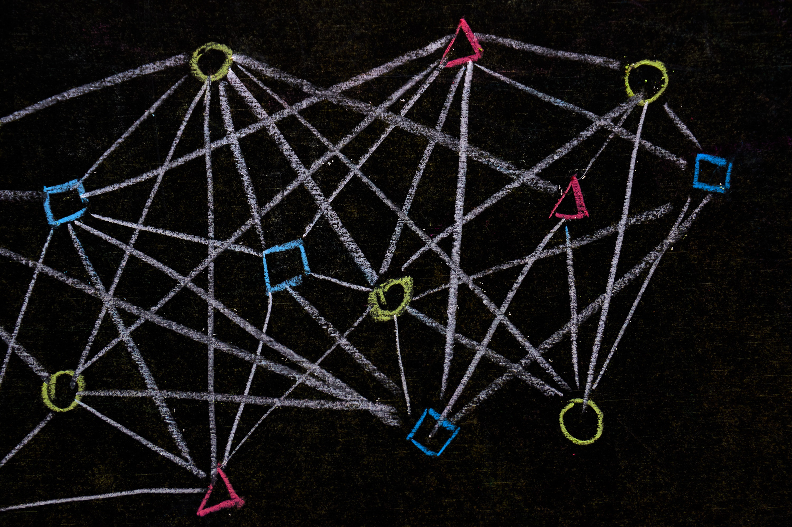

Understanding Crypto - Decentralization
There has always been an eternal battle between general safety and personal liberty. As with all systems, they have always worked when a balance is observed. A mutual understanding between the people and the government. A situation where all risks are understood and most actions are taken to evade problems without going overboard. A very good example of this would be the speed limit.
There are some folks who would want the speed limit abolished so that they could pretend that they are race car drivers and race around the town. At the same time statisticians have found out that most car accidents have occurred while the cars have been moving, so they suggest stopping all cars everywhere so that accidents don’t happen at all.
The rest of us, the people generally considered sane, just want to not get killed by a road raging maniac on our way to work each morning. This means that while some of us disagree on what the limit should be, most of us agree that the limit is a good idea in general. So it is never a conversation of absolutes. So what happens when the tables are turned and the crazy people get to power? It sure has happened a lot in history and there are still countries led by cruel, murderous tyrants. They want all the power. Decentralization? That is their worst nightmare.
What is Decentralization?

The term was first used when talking about the government and their powers. A centralized system means that there is a single governing body in the middle of everything that happens. A single entity that makes the rules for everyone and enforces them strictly. The main problem with this is that this entity becomes detached from reality and tries to fix it with more rules and red tape. And that is the best case scenario. Worst case scenario? The problem is no more, if the one who complains about it is silenced.
The same applies to finances. A bank that holds your assets can do whatever it pleases and you just have to nod and agree that what it is doing is just fine. Charges you overdraft fees and other made up things? Just fine. Freezes your assets while “investigating something”? Just fine. Filing for bankruptcy and just losing all your assets? Just fine. And who are you going to complain to? Sue a bank? Spend years and years of legal battles with a finance giant only to get countersued in the end? Just fine.
Make no mistake - this article is not about anarchy or absolute libertarianism. One should follow the rules, pay taxes, and observe speed limits. That is essential for the survival of humans as a collective. The problem is that the average man has absolutely no weapons against this unified, centralized financial system where the answer is “sue them” or “complain to regulatory institutions” and we all know how useful that is. Hard to win in a battle where the opponent makes the rules.
And just to reiterate we’re not talking about a bank asking you to verify your identity when registering or little things like that. We’re talking about times when the situation has turned crazy. In 2015 when Greece was in trouble, the government froze all banks. A person was allowed to withdraw only 60 euros a day. When Zimbabwean currency lost all trust after hyperinflation, the government decided to just ban the trade of other currencies without prior notice. You invested in USD so that your family doesn’t starve? Too bad, dollars are not legal tender anymore.
What can be done?
The internet arrived and absolutely decentralized everything. Anyone who could make a webpage did and published whatever they wanted. Suddenly governments were not able to control the populace with the evening news and government issued newspapers. Totalitarian countries panicked, forbidding internet access and where they could have previously just ignored those pesky journalists, they had to fight them. Only for them to escape and keep publishing articles from different countries.
All communication opened up and tyrants could no more listen to phone conversations to find opponents, as everyone had moved to various messengers. Encrypted, indecipherable, inaccessible by an egomaniac leading a country. So they got banned and if the secret police found a specific messenger tool on your phone, you were in trouble even if they could not find anything incriminating. The sole possession of a specific app was punishable. Now what? Journalists download a video game, enter their friend’s server through a memorized address and chat with them there. If they are afraid that their computer is bugged and the government can read what they type on the keyboard, they literally just place building blocks in the game in morse code or write by shooting the wall, leaving bullet holes while their friends read.
This sort of innovation and relentlessness is the soul of a decentralized system that has now already stood against the huge financial network. The soul of a blockchain where everyone is equal and all you need to join is a device and an internet connection. It is a new field and full of innovations and complications, different ideas and solutions, but that is a good thing in itself. For there is no central power to tell how things should be. People are free to choose the solutions they like and participate in as many projects as they care.
Decentralized Finance Examples
Most of these things are done through a “Smart contract”. It is basically a little program that is located on the blockchain and executes when conditions are met. It is governed by computer code and no one can edit it. You get in an argument with someone that your favorite team will win the Basketball game. You both make a bet of 10 dollars. How can you ensure that a random person on a different continent will pay if they lose? You do not need to trust them. You make a smart contract that expects 20 dollars to be deposited till the start of the game, checks the result in an official webpage and then sends the funds to whoever has won. No need to trust the other person, just trust the computer code. While this has been just a short introduction, this opens many possibilities.
Transfer of funds
A simple transfer of funds can take a lot of time if you send it to a friend overseas. You send it from your bank, then your bank sends it to their bank, then they send it to their account. It can take a lot of time. As we have the internet, we make friends all over the world and any transaction can suddenly seem suspicious to a bank and they can freeze the account. If using a blockchain, you send the money straight to the friend’s account. All of the banking system is bypassed and the money is received in mere seconds.
Trade
No need to trust the trader. No need to even know the trader. Both of your funds are sent to the Smart contract where they are released when every condition is met. Each transfer is final, meaning that the other guy can’t change his mind and suddenly contact the bank and demand a charge-back. Can’t start fraudulent claims against the seller saying that they did not deliver as it often happens on other trading platforms. It is on the blockchain, everything can be seen in plain view.
Saving accounts
Choose where to have your savings account and in which crypto you’ll hold it. In highly volatile markets like Bitcoin or some safe spaces like stablecoins? Feel free to do whatever you wish. No one can freeze your assets and if suddenly some rich people in your country play around too much and a bank goes bankrupt, it changes nothing for you. Suddenly a hyper-inflation of your currency? Not with stablecoins. You are off the grid and don’t have to pay each time some rich people fail in their machinations.
Conclusion
It is still a new idea with new players and opportunities. It is not a solution for everything and can not solve every little financial aspect of the world. People will point out various drawbacks and they’ll be right. It is still complicated, still has a steep learning curve and you need to be extra cautious. That is not the point. The point is that there needs to be an alternative system to banks, an alternative system to overwhelming government pressure. And just you wait - when the decentralized finance system will grow enough and become an unstoppable part of the global system, banks will soon realize that they don’t need to charge you that overdraft fee, the “penalty for being poor”. Suddenly they will all offer to be friends again. But you’ll be able to choose.
Thank you for reading our blog. If you have any questions about the topic or want to suggest a new one, please write an email to [email protected].